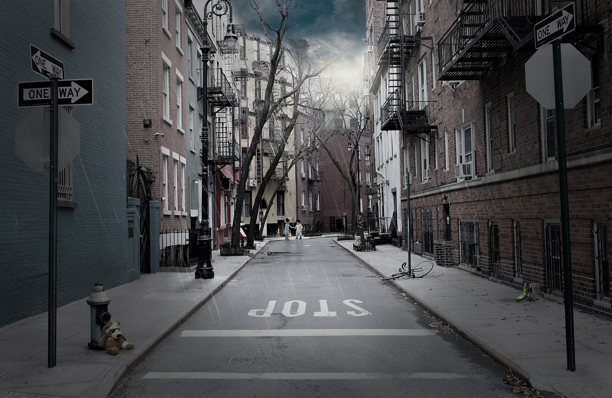
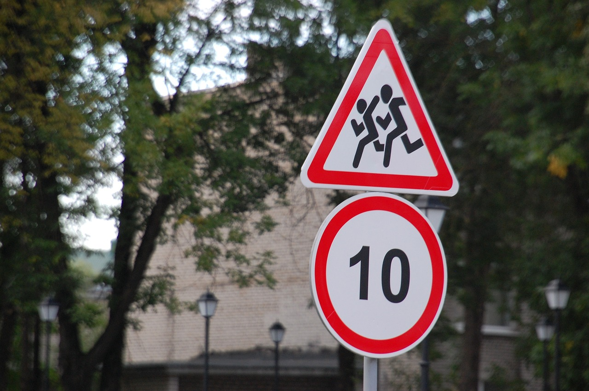
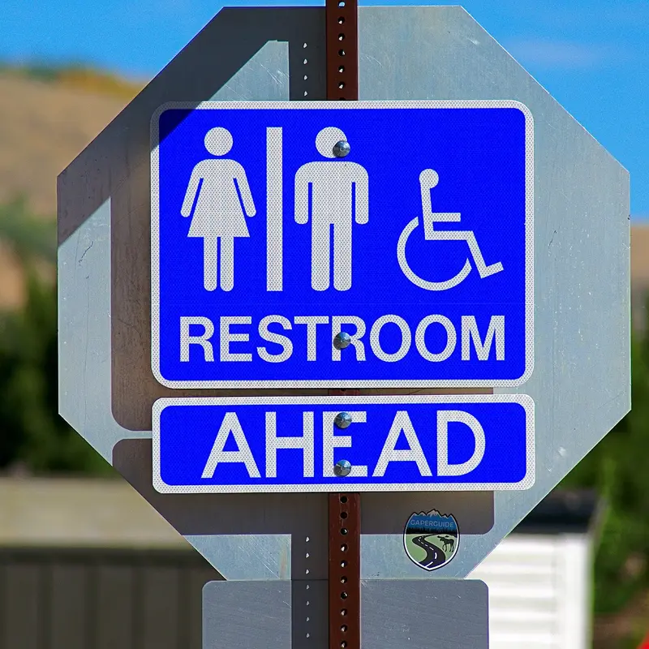
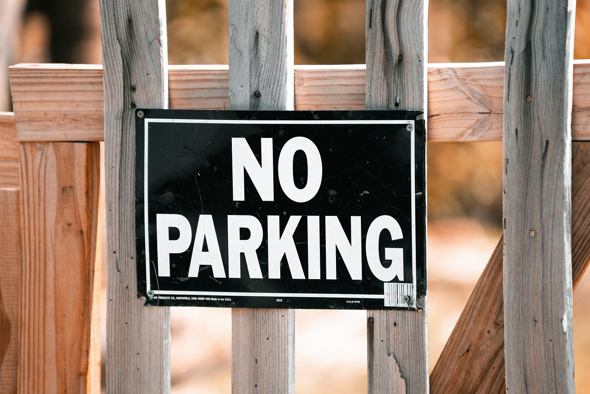

An arrow
A stop sign

A street name sign
A speed limit sign

A logo
A one-way sign

An exit sign
A crosswalk symbol
A restroom sign

A no-parking sign

A "Welcome" or "Open" sign
A sign with a picture instead of words
A sign in a language other than yours
A handwritten sign
A warning symbol
A sign with red on it

A sign with blue on it
A sign with yellow on it
A faded or damaged sign
A recycling symbol
A number on a building